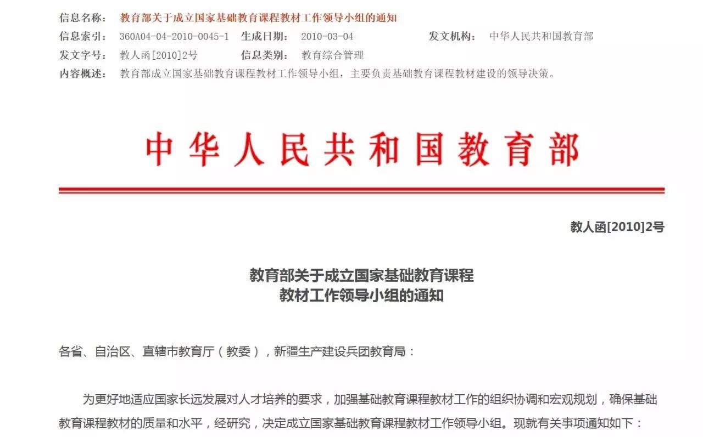

秋白案二审开庭|当开庭碰上期末季，一起给教育部出考题！
以下文章来源于秋白的自由野 ，作者开庭！！
关注性/别议题 关注校园性少数 拒绝污名 每一个人都能在世界里自由行走
距离第一次起诉教育部，已过去1年半；她在法院与教育部官员聊聊课本中的“同性恋”
距离第二次起诉教育部（未获立案），已过去9个月；秋白打官司，下一步由你来决定（姬/基情投票中）
距离第三次诉教育部（成功立案），已过去7个月；
距离再告教育部案一审开庭，已过去4个月；再度被告的教育部回应恐同教材 王之冷漠|秋白记录
距离秋白不服败诉结果，上诉至北京市高级人民法院，已过去3个月；再告教育部案宣判|当正义还没来的时候，我们要坚持
但距离教育部认真处理错误教材的日子……就像等待北京治理雾霾的日子，遥遥无期……
前几天，收到北京市高级人民法院的书面通知
秋白案将于2017年1月10日下午3点45分
在北京市高级人民法院第二次开庭审理
再次开庭意味着又是一次可以见到教育部官员千载难逢的好时机，意味着教材的解决还有一丝反转的可能。
我与律师已和法院沟通确认，遗憾这次不再公开审理，因此关心教材议题的热心人无法进入法庭。莫名焦虑又开始向我袭来，我担心传播上“被噤声”，使教育部的不作为不再进入公众视野，我担心没有众多的旁听观众给教育部压力，使教育部更加傲慢相对。于是，我想或许可以通过另一种方式，把大家的声音带到开庭现场，让教育部官员知道即使困难重重，仍有很多普通人在关注恐同教材。
离二审开庭还有三天
现打算向征集大家想对教育部提问的问题
我会将问题整理成一份“期末考题”
带到庭审现场给教育部官员“作答”！
庭审结束后，再把教育部的答题情况整理出来，让大家来做评卷老师，共同验证教育部究竟是学霸还是学渣。
苦逼期末季，考试虐你千万遍
这时候轮到你翻身农奴当主人，给教育部出考题！
题型不限，可下方留言亦可私信该公号后台。
不多说了，教育部你也有今天，我先出两题:
1.如果你发现课堂使用的教材里说同性恋是精神疾病，你会采取的措施是：
A.起诉教育部, 与恐同教材作坚决的斗争
B.起诉教育部，落实依法治国基本方略
C.起诉教育部，并加强反歧视的宣传教育工作
D.恐同教材没有侵犯任何人权益，let it go。
2.如果教科书说异性恋是性变态，教育部你觉得教科书需不需要改？
A.谁这么大胆？
B.不用啦，异性恋好污的
C.其实，我也是同性恋（羞羞）
媒体采访请联系，秋小白，微信号：Q827598881；
1.10下午三点秋小白将到达法院门口，支持者可以到现场来面姬！
北京市高级人民法院地址：朝阳区建国门南大街10号
还没完..开庭前秋小白还有话说...
不知不觉，与教育部的爱恨情仇折腾了一年半，还可能会继续折腾下去，期间多次被质疑起诉教育部会加大政府职能，破坏言论自由云云。唠叨的秋白想就这些质疑说多几句，况且如果能够理清这些问题，对于我们接下来的每一次行动都有帮助，欢迎有想法的你也能够为我们献言献策，让真理越辩越明。
2015年3月，我曾经给国家新闻出版总局寄过举bao恐同教材的信件，遭到退信且出版总局工作人员声称，“教材监管不是由出版总局负责，而是教育部负责”。法盲的我顺藤摸瓜把教育部官网翻了个底朝天，查到诸如这样的信息：

（截图来自教育部官网）

（截图来自教育部官网）
教育部的高等教育司负责指导各类高等学校的教材建设工作，而且教育部还有专门的教材工作领导小组。从相关职责上来看，教育部确实承担并且已经在监管教材。那么在监管教材过程中，教育部有没发现过污名同性恋的教材呢，带着疑惑我向教育部申请恐同教材监管情况的信息公开，却没有在法定期限内获得回复。
我已经被四处踢皮球，教育部的不理不睬使我愈发无力，于是抱着试一试的想法起诉教育部，没想到这一试便成功立案，这就是被媒体称为“中国同性恋受教育权第一案”的由来。从此之后，我与教育部一路纠缠至今。
有一种声音认为要求教育部监管教材会加大政府部门权力。
然而不管是从教育部官网上查阅的内设机构主要职责，还是从教育部部长的公开发言，都可以看出在教材质量、监管以及教材建设工作中，教育部都承担不可推卸的责任。因此要求教育部对恐同教材做出回应，非但没有加大政府部门的权力，相反，是教育部连该尽的职责都没有尽到，以致造成教材错误百出的乱象。
自新部长上任以来，我还发现教育部不仅在管理教材，而且管得越来越红且专，在刚过去的2016年教育部发文：“要对高校教材把好政治关，对引进教材选用负总责”。教育部一方面放置污名同性恋的教材于不顾，另一方面却投入大量时间与精力狠抓教材的政治关，这不是打自己的脸么……
(截图来自网络)
还有一种声音认为“要求监管教材会限制言论自由”
我认为言论自由绝对不等同于绝对的自由，言论自由的前提是不能侵犯别人的自由和权利（而在这里侵犯的是同性恋群体的名誉权和受教育权）。通俗点讲，要基于平等与互相尊重，我们才能去谈言论自由的范围。如果我们再从教材的角度出发去看待言论自由的话，必须要知道的是教材不是一般的书籍。其作为教学工具，区别于其它学术著作，往往不能由学生自主选择，因此教材里出现的内容必须是客观事实，即使没有公认的客观事实也应该要做到呈现不同的观点。显然，不管哪一种情况，恐同教材均没能够做到。
而当我得知诉教育部的新闻报道普遍遭遇“消声令”时，我不禁怀疑，到底限制言论自由的是谁…
雾霾锁城，非一朝一日就可形成，这里面有我们一次次的不在意，无所谓，妥协助长的。
对于教材而言也如此，教材的呈现只是社会随意、污名同性恋泛滥的一种具体体现。正是编者觉得没人在乎，就不修改；正是出版社觉得写错没人在意，也不会有人敢出来叫嚣，才敢在审核上“掉以轻心”，加上没有人站出来，错误教材得以一路顺利过关。我们的语言、书籍、影像中一个个的随意、不在乎、无所谓，已经在一次次为那固化的污名制度添砖加瓦。
一路以来，听过很多“善意的劝言”，请教了很多人，分析了很多原因，在面对高墙时，依然有深深的无力感。不知道接下来等到的会是怎样的结果，只希望在坚持告教育部的这一程中我们依旧会站在一起，不让雾霾锁城的悲剧在教材中重演。
注：转载请联系“秋白的自由野”后台